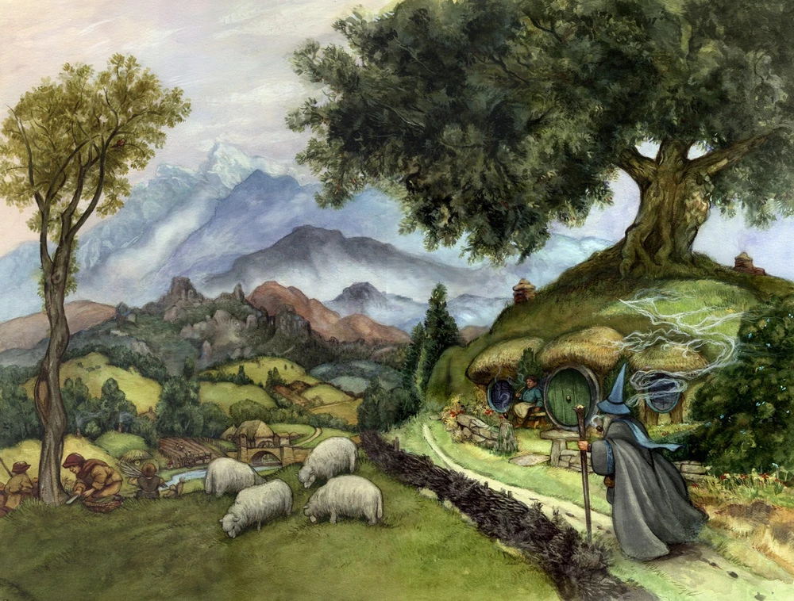

The Shires eastern border is the Brandywine River, though Hobbits also lives east of the river in Buckland though lived west of the Wedge.
The north and west of the Shire have no set borders, instead being bounded by vague features such as the Tower Hills

History
The Shire was settled by hobbits in the year TA 1601 (Year 1 in Shire Reckoning) after migrating over the Misty Mountains, coming from Dunland and Cardolan and Rhudaur before that.
The Shire fell under the jurisdiction of the Numenorean realm of Arnor, where it used to be known as the King's Hunting Grounds but had been depopulated after a great plague.
The Hobbits reportedly sent archers to fight in the kingdom's battles against the Witch-King of Arnor, as they considered themselves subjects of the king.
In the Third Age, the history was mainly before Sauron began to return, Orcs invaded the shire in TA 2747 but were defeated by Bandobras Took at the Battle of the Green Fields.